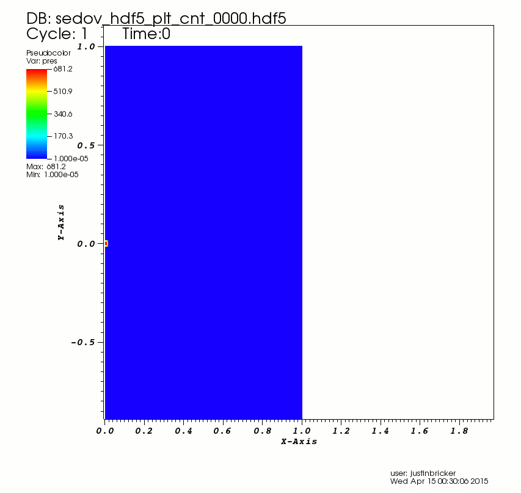
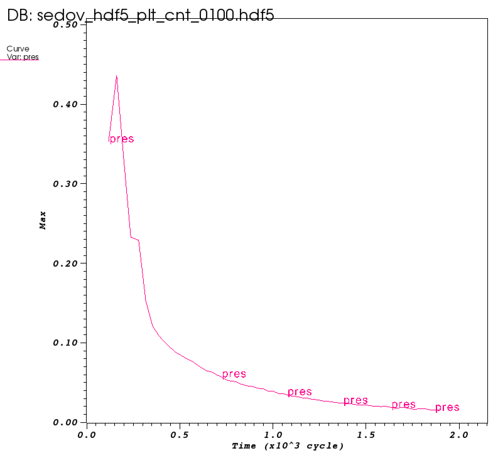
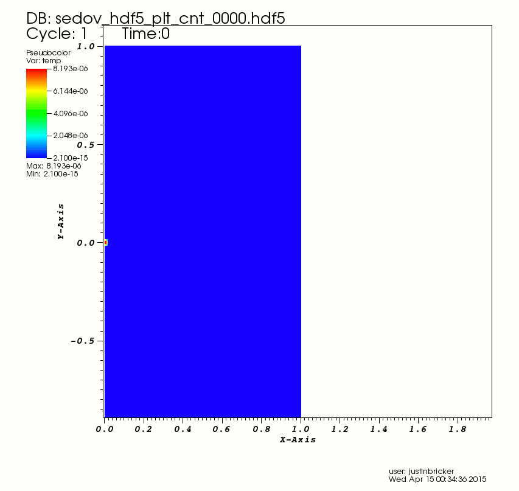
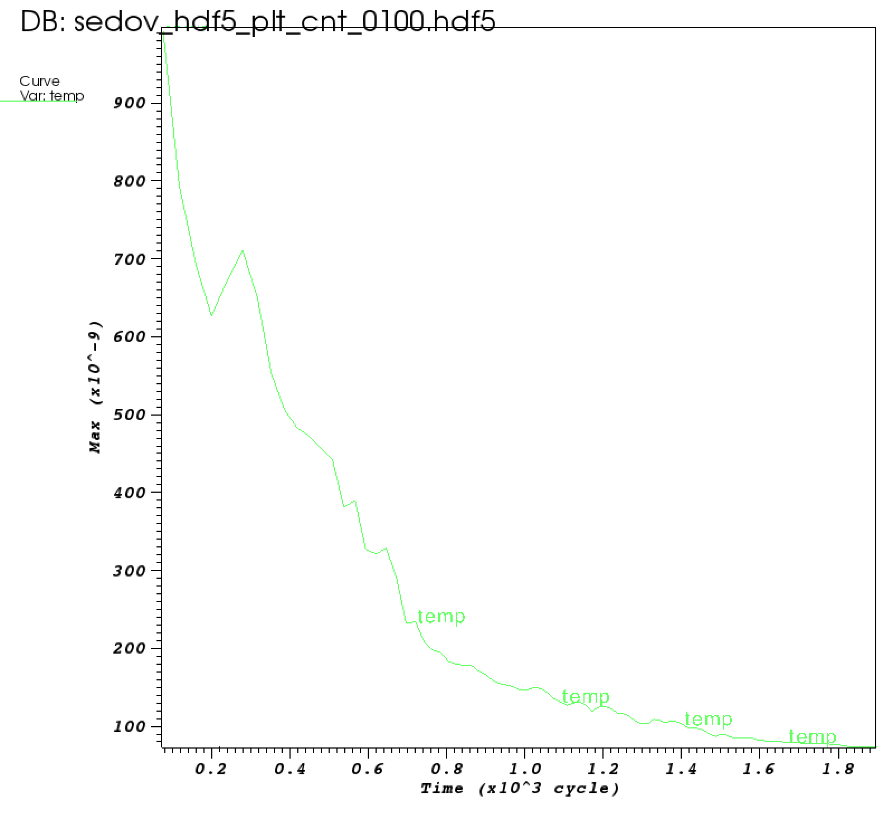
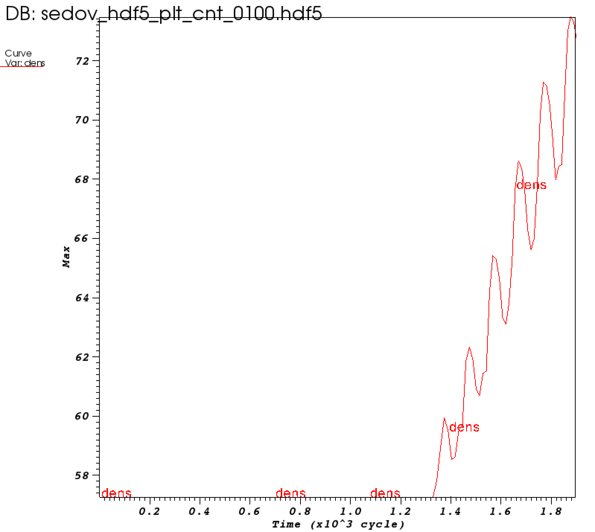
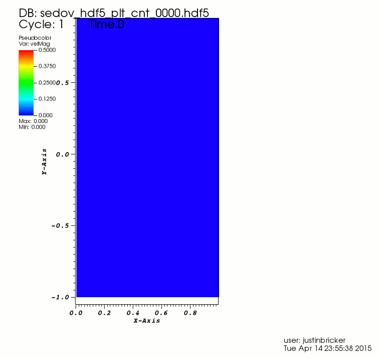
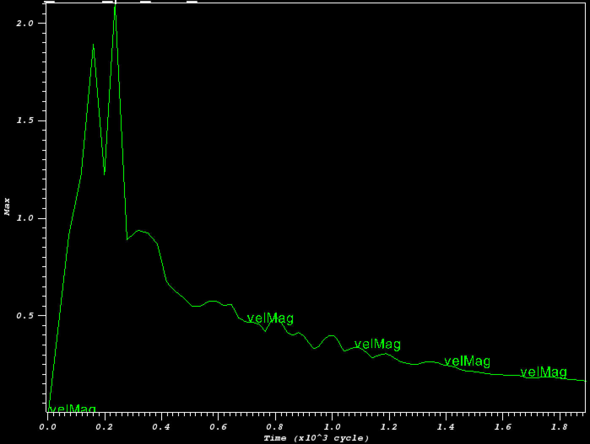
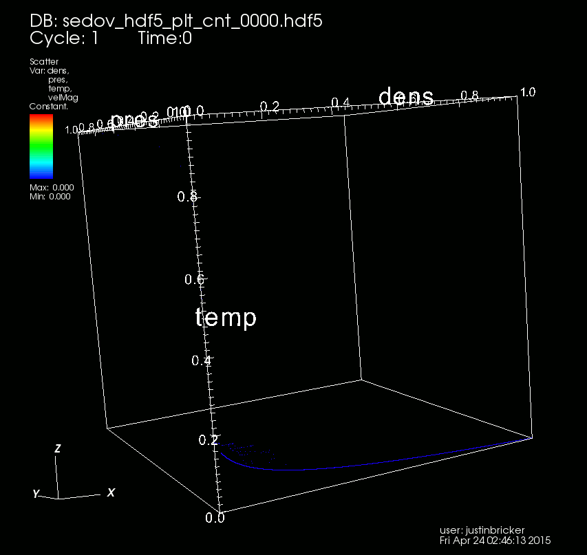
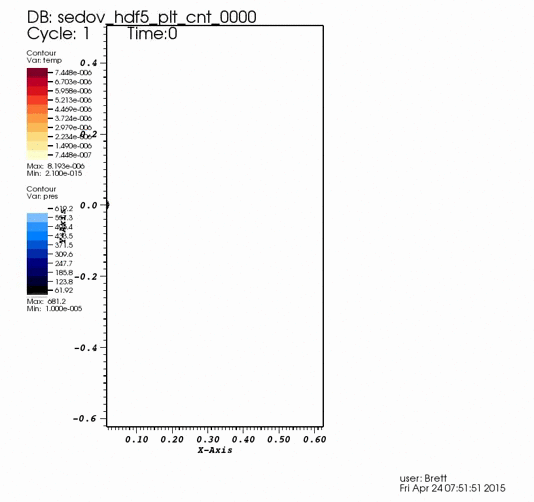
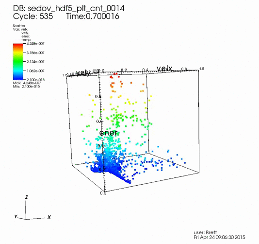

Presentation Version of the Report
Scientific Visualization Final Project: Sedov Supernova
Justin Bricker, Anahid Ehtemami, Aria Smith, Brett Green
Table of Contents
Background
Project Description
We are given data for a inhomogeneous sedov phase supernova, and are asked to identify the source of large-scale structures and to summarize the evolution of various aspects with respect to each other. We found that the large-scale structures originated from perturbations in returning shock waves that grouped various small, high-energy structures. The velocity of these structures was closely related to the difference in pressure surrounding the structures. The temperature spiked soon after the explosion, but soon the adiabatic nature took over and the temperature lowered and began to average. The density was pushed by the initial shock wave to an shell, forming a supernova remnant, which focused more in the top half of the sphere. We also noticed fluctuations in density at the edge that correlated with pressure fluctuations. The pressure was higher towards the top, and lower towards the bottom, the highest velocities were pointed mostly towards the lower end.
Techiniques Used
The Sedov data-set was visualized using the VisIt visualization software. The majority of the figures/gifs used either the pseudocolor and/or contour plot types. These plots were scaled linearly. Other plot types used were scatter (linearly and logarithmically scaled) and parallel (linear). The maximum pressure, density, energy, and velocity graph were all created using the query tool within Visit.
Pressure (Aria)
Pressure over time


The above gif shows (in color and contour) the evolution of pressure in the medium throughout the timespan of the provided supernova data. The contour plot also displays the pressure of the shock blast over time. It can be seen that the blast wave is pressure that is expanding in a hemispherical form. The size of the supernova continues to increase with each wave coming from the core.
Maximum Pressure over time

The above image shows (in color) the evolution of pressure in the medium throughout the timespan of the provided supernova data. The initial maximum pressure appears to spike upward and then gradually decrease to zero over time.
Temperature (Anahid)
Temperature over time

The above gif shows (in color) the evolution of temperature in the medium throughout the timespan of the provided supernova data. When a stellar stops being supported against gravity it collapses in on itself and this results in a rapid increase in temperature and that is why the temperature is very high at the beginning of this visualization and then it is decreasing. A short while after initiation, temperature has another smaller spike but then starts decreasing as it is displayed on the gif. (The values assigned to each color decrease).
Maximum Temperature over time

The maximum temperature over time is displayed on the image above which also agrees with the above explanation.
Density (Brett)
Density over time

The above gif shows (in color) the evolution of density in the medium throughout the timespan of the provided supernova data. This movie seems to show that the bulk of the mass is pushed forward in front of the shockwave, and in this case, the density is non-symmetric.
Maximum Density over time

The plot shows maximum density over the time period. I find it odd that this isn't much higher in the beginning of the time frame. The density movie seems to show waves that bounce against the high density areas, the fluctuating high values later in the time period may reflect that.
Velocity Magnitude (Justin)
Velocity Magnitude over time

The above gif shows (in color) the evolution of velocity magnitude (instantaneous speed) in the medium throughout the timespan of the provided supernova data. This value was calcuated as an expression of the VelX and VelY parameters. You can see very large velocities at the begining of the event, which almost instantaneously disapate. There are small "puffs" of relatively fast moving areas that coincide largely with the temperature features that we see above. However, in general the fasting moving areas are on the outskirts of the expanding hemisphere.
Maximum Velocity Magnitude over time

The above image shows the maximum value of instantaneous speed in the medium throughout in each timeframe of the provided supernova data. This plot agrees with the gif above, showing a large burst of speed initially, and quickly decreasing speeds thereafter.
Some Interesting Images
Pressure and Energy: Overlay (Aria)

Wikipedia defines a blast wave in fluid dynamics as "the pressure and flow resulting from the deposition of a large amount of energy in a small very localized volume". This movie attempts to show this definition by overlaying the pseudo-color energy onto the pseudo-color pressure. It is seen that the energy seems to force the pressure onto the hemispherical form of the supernovae out. This causes the size of the supernovae to increase.
Pressure, Density, Temperature and Velocity: Scatter and Color (Justin)

This gif is a bit hard to wrap your head around. I will decribe briefly some inferences that might be made from looking at this visualization. The animation start with points of mixed density and low temperature, pressure, and speed. We see points moving from this state to ones of higher temperature and pressure at faster speeds. Eventually the pressures and temperatures drop and settle to lower values.
Density, Temperature, and Pressure: Parallel Lines (Anahid)

We see a THICK line here of low density data that is also low temperature and almost no pressure, I think this comes from the background and not our data of interest. WHAT IS super interesting is how the pressure scale under goes so much change over time when it seems like the density and temperature scaling and the proportions of data are pretty static. The temperature is also really high at first, then quickly most sampled points drop. Lowering average temperature is one quality of supernovae
Pressure and Energy: Contour (Brett)

Velocity of High Energy Particles and Distribution of Energy (Brett)
